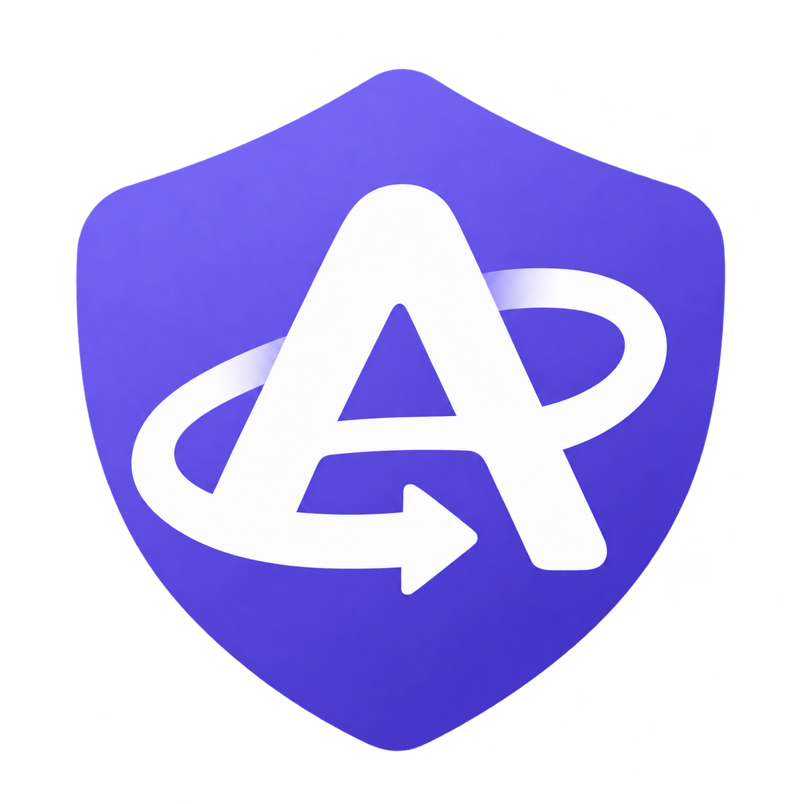

<!doctype html>
<html lang="zh-CN">
  <head>
    <meta charset="UTF-8" />
    <meta name="viewport" content="width=device-width, initial-scale=1.0, viewport-fit=cover" />
    <title>AutoVPN</title>
    <link rel="icon" type="image/png" href="./assets/vpn-auto-logo-v3.png" />
    <!-- Resolve appearance before paint, including while the profile loads.
         Storage can be blocked in a browser, so system mode is the fallback. -->
    <script>
      try {
        const saved = JSON.parse(localStorage.getItem('autovpn.ui.theme'));
        const choice = ['light', 'dark'].includes(saved) ? saved : 'system';
        document.documentElement.dataset.theme = choice === 'dark' || (choice === 'system' && matchMedia('(prefers-color-scheme: dark)').matches) ? 'dark' : 'light';
        document.documentElement.dataset.themePreference = choice;
      } catch {
        document.documentElement.dataset.theme = matchMedia('(prefers-color-scheme: dark)').matches ? 'dark' : 'light';
      }
    </script>
    <link rel="stylesheet" href="./styles.css" />
    <link rel="stylesheet" href="./workspace.css" />
    <link rel="stylesheet" href="./analytics.bundle.css" />
  </head>
  <body data-page="dashboard">
    <script>
      // Only a native file window needs Electron's draggable title area.
      // Plain H5 previews previously inherited it and showed a blank top bar.
      document.body.dataset.runtime = location.protocol === 'file:' && window.vpnAutomation ? 'electron' : 'web';
    </script>
    <div class="app-frame">
      <div class="window-titlebar" aria-hidden="true"></div>
      <div class="app-content-shell">
        <div class="workspace-shell">
          <aside class="sidebar">
            <div class="sidebar-brand">
              
              <div class="brand-copy">
                <div id="sidebarTitle" class="sidebar-title"></div>
                <div id="sidebarVersion" class="sidebar-version"></div>
              </div>
            </div>

            <nav id="sidebarNav" class="sidebar-nav"></nav>
            <button id="sidebarToggle" class="icon-btn sidebar-toggle" type="button" aria-label="收起导航" aria-expanded="true" aria-controls="sidebarNav" title="收起导航"></button>
          </aside>

          <div class="main-shell">
            <header class="topbar">
              <div class="topbar-heading">
                <div class="page-title-row">
                  <h1 id="pageTitle"></h1>
                  <span id="runStateBadge" class="badge neutral"></span>
                </div>
                <!-- Repeated feature descriptions previously pushed the page
                     tools below the fold. The navigation supplies context. -->
              </div>

              <div id="pageActions" class="topbar-actions"></div>
            </header>

            <main id="pageContent" class="page-content"></main>
          </div>
        </div>
      </div>
      <div id="toastRoot" class="toast-root" aria-live="polite" aria-atomic="true"></div>
    </div>

    <script type="module" src="./app.js"></script>
  </body>
</html>
